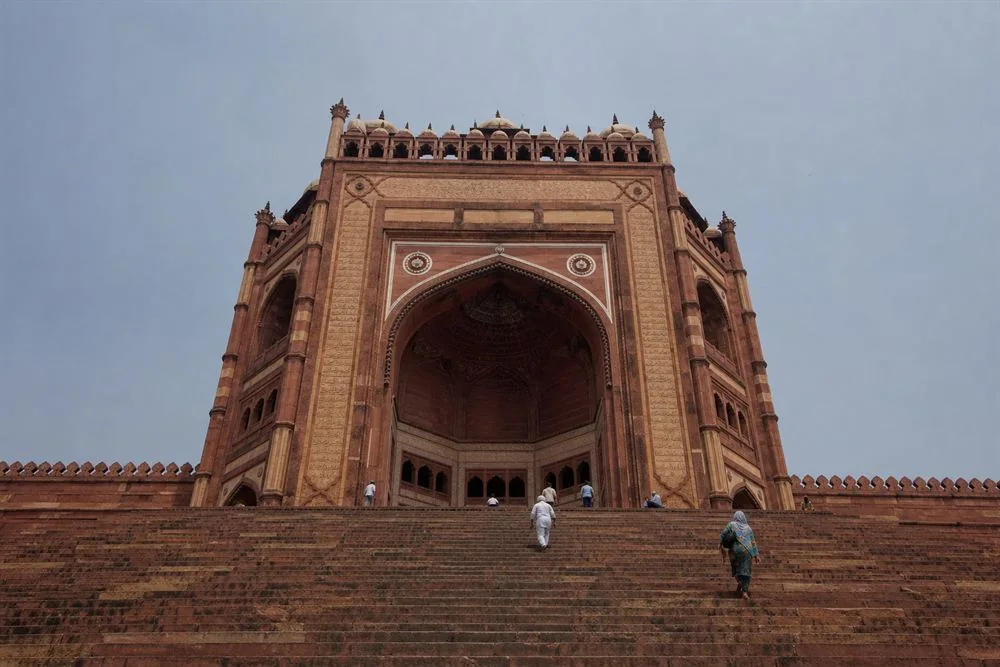

Agra to Fatehpur Sikri TaxiPrivate AC Cab, Half-Day Trip
Buland Darwaza · Panch Mahal
Jama Masjid · Tomb Of Salim Chishti

One Short Trip From Agra To A UNESCO World Heritage City
Fatehpur Sikri was Emperor Akbar’s capital for little more than a decade before it was abandoned, which is why the red sandstone palaces, courtyards and the Jama Masjid complex still stand largely as they were left. At under an hour from Agra, it is one of the easiest half-day trips available — your cab and driver make the round trip with you and wait at the complex for as long as you need.
Fatehpur Sikri At A Glance
~40 KM
From Agra, One Way
~1 HR
Drive Each Way
2–3 HRS
To Explore The Complex
₹2,500
AC Sedan, Full Day
What You’ll See At Fatehpur Sikri
Four points inside one connected complex — you walk between them, the driver stays with the car.
Buland Darwaza
The 54-metre victory gate, one of the largest gateways in India. A long flight of sandstone steps leads up to it — the view back down over the approach is worth the climb on its own.
Panch Mahal
A five-storey, open-sided pavilion built as a place to catch the breeze, each floor smaller than the one below it. No two of its 176 columns are carved alike.
Jama Masjid
The mosque at the heart of the complex, built before the city itself and still large enough that Buland Darwaza was added later purely as a grander entrance to it.
Tomb of Salim Chishti
A white marble tomb inside the mosque courtyard, built for the Sufi saint whose blessing Akbar credited for the birth of his heir. Visitors still tie threads to its latticed screens.
Pickup From Anywhere In Agra
Hotel Pickup
Agra Cantt Station
Agra Fort Station
Kheria Airport
Any Agra Address
Clear Fare Breakdown
What Your Fatehpur Sikri Trip Includes
One vehicle, one driver, one round trip — the same car that brings you back waits with you all day.
Included On Every Booking
- Private AC Cab — Not Shared
- Round Trip, Agra To Fatehpur Sikri And Back
- Hotel, Station Or Airport Pickup
- Driver Waits At The Complex
- Flexible Morning Or Afternoon Start
- Fixed Fare Confirmed In Writing
- Driver Details Before Pickup
Fatehpur Sikri Taxi Fare
One published fare for the sedan; larger cabs are quoted on WhatsApp since demand for this short trip is mostly for a sedan.
| Cab Type | Seats | Full Day Fare |
|---|---|---|
| AC Sedan (Dzire / Amaze) | 4 | ₹2,500 |
| AC SUV (Ertiga) | 6 | Fare on WhatsApp |
| AC SUV (Innova Crysta) | 7 | Fare on WhatsApp |
Included In The Fare
AC vehicle • Fuel • Driver charges • Driver waiting at the complex
Paid Separately By You
Monument entry ticket at the gate • Tolls • Parking
The monument entry ticket is priced separately for Indian and foreign visitors by the Archaeological Survey of India and is not part of the cab fare. See the full Agra taxi fare list for every other route we run.
Route, Travel Time And What To Bring
Fatehpur Sikri sits about 40 km west of Agra, a comfortable one-hour drive via NH-19 or the Fatehpur Sikri Road. The road is in good condition for the full distance, which is why this is one of the most relaxed half-day trips out of Agra — most travellers leave by mid-morning, spend 2 to 3 hours at the complex, and are back in Agra well before evening.
The climb to Buland Darwaza is a long flight of sandstone steps in open sun, and the complex involves a fair amount of walking on uneven stone once you are inside. Comfortable shoes, a hat and water are worth carrying, particularly outside the winter months.

The Climb To Buland DarwazaCombine Your Day
With Agra Sightseeing
Fatehpur Sikri pairs naturally with a fuller day in Agra. See our Agra local sightseeing taxi page for the Taj Mahal, Agra Fort and the rest of the city circuit, and ask us on WhatsApp about a combined itinerary.
On The Way To Jaipur
Fatehpur Sikri sits directly on the Agra–Jaipur highway, about 40 km out of Agra, so it is an easy stop if you are continuing onward. See our Agra to Jaipur taxi page for the full route.
Why Travel By Private Cab
One Short Round Trip
At under an hour each way, this is one of the more relaxed half-day trips from Agra — easy to fit around a hotel checkout or a light schedule.
No Waiting Charge At The Complex
The driver waits within your booked day at no extra cost, so you are not watching the clock while exploring Buland Darwaza and the Panch Mahal.
Fixed Fare, No Surge
The ₹2,500 sedan fare covers fuel and driver for the day; only the monument ticket, tolls and parking are extra, and none of that is a surprise on arrival.
Easy To Extend
Combine the trip with a full Agra sightseeing day or an onward drive to Jaipur without changing vehicles or drivers.
Visiting From Outside India?
The same practical answers every first-time visitor asks us, before you book.
Fare Agreed First
Your fare, ₹2,500 for the full day, is confirmed on WhatsApp before you travel.
Private Cab, Not Shared
About an hour’s drive each way, roughly 40 km — the vehicle is for your group only.
Pickup Where You Are
Your Agra hotel, airport, or station — tell us where when you book.
Tolls, Parking & Tickets
The fare covers the vehicle and driver. Entry tickets to the complex, tolls and parking are paid by you directly.
Luggage & Driver Details
Bags stay in the car during your 2–3 hours at the complex, and driver details are shared before pickup.
Your Itinerary, Your Choice
The driver is not a licensed monument guide — ask in advance if you would like one arranged, at extra cost. No shopping stops unless you request one.
How Booking Your Fatehpur Sikri Taxi Works
01 — Send Your Plan
Travel date, pickup point in Agra, passenger count and whether you want to combine the trip with anything else.
02 — Get The Fare In Writing
We confirm the fixed fare on WhatsApp before you book — sedan pricing is published, larger cabs quoted directly.
03 — Receive Driver Details
Driver name, mobile number and car registration number are sent before pickup.
04 — Travel And Explore
About an hour out, 2 to 3 hours at the complex with the driver waiting, and an hour back.
Nothing is locked in until you have the fare. No app to download, and no advance payment for most bookings.
Local Agra Operator
Your Local Travel Partner In Agra
Padma Shree Travels operates from Shamsabad, Agra, running local sightseeing, station and airport transfers and outstation trips. Easy to extend into Agra sightseeing, Jaipur or an outstation trip.
- Your fare Fares are confirmed on WhatsApp before you travel, with tolls, parking and the monument ticket identified separately.
- Your driver Your driver’s name, mobile number and car registration number are shared before pickup.
- Pickup and drop Pickup from hotels across Agra, Agra Cantt, Agra Fort station and Kheria Airport, at no extra pickup charge within the city.
Direct WhatsApp and phone support before and during your trip.
.jpg)
Fatehpur Sikri Taxi — Questions & Answers
How far is Fatehpur Sikri from Agra?
Fatehpur Sikri is approximately 40 km from Agra via NH-19 or the Fatehpur Sikri Road. The drive takes about 1 hour each way by private taxi.
What is the taxi fare from Agra to Fatehpur Sikri?
₹2,500 for an AC sedan for the full day, including fuel and driver. An AC SUV (Ertiga or Innova Crysta) is available on request — message us on WhatsApp for that fare. Monument entry tickets, tolls and parking are paid separately by the customer.
How much time is needed to see Fatehpur Sikri?
Most visitors need 2 to 3 hours to see the main complex, including Buland Darwaza, Panch Mahal, Jama Masjid and the Tomb of Salim Chishti.
Is there an entry fee at Fatehpur Sikri?
Yes. There is a monument entry ticket, priced separately for Indian and foreign visitors, paid directly at the gate. It is not included in the cab fare.
Will the driver wait while I explore the complex?
Yes. Your driver waits at the complex for the duration of your booked day at no extra charge.
Can I combine Fatehpur Sikri with Agra sightseeing or a trip to Jaipur?
Yes. Fatehpur Sikri sits directly on the Agra–Jaipur highway, so it is an easy stop on an Agra to Jaipur taxi trip, and it also combines naturally with a full Agra sightseeing day. Message us on WhatsApp to plan either combination.
What should I wear or bring for the visit?
The main gateway is reached by a long flight of sandstone steps in the open sun, so comfortable walking shoes, a hat and water are worth carrying, especially outside the winter months. The complex involves a fair amount of walking on uneven stone.
Can you pick me up from my hotel, Agra Cantt or the airport?
Yes. We pick up from any address in Agra, including hotels across the city, Agra Cantt railway station, Agra Fort railway station and Kheria Airport.
How do I book, and is an advance payment needed?
Call or message us on WhatsApp with your travel date and pickup point, and we confirm the fixed fare before you book. Your driver’s name, mobile number and car registration number are shared before pickup. No app is needed and no advance payment is required for most bookings.
Other Ways To See Agra And Beyond
Agra Local Sightseeing
Taj Mahal, Agra Fort and the full city circuit — combine it with Fatehpur Sikri.
From ₹2,500 full dayAgra to Jaipur Taxi
Continue onward on the same highway Fatehpur Sikri sits on.
Fare on WhatsAppTaj Mahal Taxi
Just the Taj Mahal and Agra Fort, on flexible timing.
From ₹1,500 half dayAgra to Bharatpur Taxi
Keoladeo National Park, further along the same bypass.
Fare on WhatsAppAll Outstation Cabs from Agra
Browse every outstation route we run.
View routesFull Agra Taxi Fare List
Every route and package we run, with fares in one place.
All faresReady For Fatehpur Sikri?
Get your fare before you book.
Send your travel date, pickup point in Agra and passenger count — and tell us if you would like to combine the trip with Agra sightseeing or a drive to Jaipur.